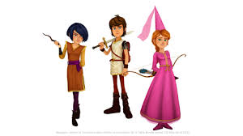

Devant la Table Ronde, Arthur fait face à Gawain. Le silence est lourd. Puis, d’une voix tremblante, Gawain ouvre sa tunique… et révèle une cicatrice en forme d’épée : le sceau des Gardiens de l’Ombre.
« Je ne suis pas un traître, dit-il. Je suis un espion envoyé par Merlin lui-même. Le vrai danger, c’est Quelliève. »
Quelliève pâlit. Elle avoue : elle est la fille cachée du roi Maux, envoyée pour détruire Canlot de l’intérieur. Mais l’amour qu’elle porte à Arthur l’a changée.
Dans un ultime sacrifice, elle utilise la magie des anciens pour sceller le roi Maux dans la Pierre du Temps.Arthur, couronné roi légitime, proclame : « La Table Ronde ne sera plus un cercle de guerriers… mais un cercle de paix. »
Et ainsi naquit la Légende de Canlot.